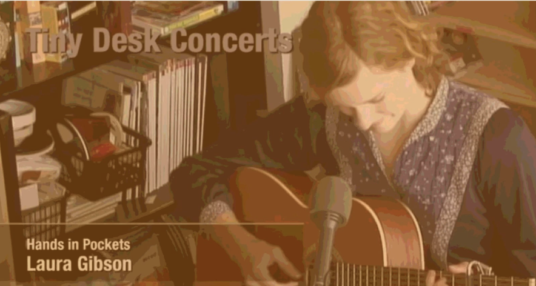

¿Querés saber cuándo hay
un nuevo encuentro?
Te contamos sobre los próximos eventos!
¿Querés saber cuándo hay un nuevo encuetro?
El proyecto nació en 2008 cuando dos periodistas de NPR invitaron a una artista a tocar en su oficina, buscando un espacio
Más intimo que los bares o estadios. Desde entonces, se convirtió en un ciclo de conciertos acústicos accesibles y auténticos
NHK presenta su propia versión de los tiny desk concerts con los artistas japoneses favoritos del momento.
¿Te convencimos?
Registrandote acá, te enviamos un mail cada vez que estemos por lanzar una nueva sesión: Fecha, horario, artista invitado e info para que vayas contectando con la experiencia desde antes de empezar.
¿Te convencimos?
Registrandote acá, te enviamos un mail cada vez que estemos por lanzar una nueva sesión: Fecha, horario, artista invitado e info para que vayas contectando con la experiencia desde antes de empezar.
Te avisamos cuando haya nuevo encuentro